1. 课前：Redis 是什么，这里为什么用，怎么用
Redis 是什么
Redis 是一个把数据放在内存里的数据库。它不像 MySQL 那样有表和列，存的是「键 → 值」：给一个名字（键），存一个值。因为在内存里，读写比 MySQL 快得多，一台普通电脑每秒能处理几万次读写。
| MySQL | Redis | |
|---|---|---|
| 数据放在哪 | 磁盘 | 内存（也可以定期存到磁盘） |
| 怎么存 | 表、行、列，用 SQL 查 | 键 → 值，用命令读写，例如 SET、GET |
| 适合放什么 | 要长期保存、要按条件查询的业务数据 | 读得很频繁的数、临时的标记、排队的消息 |
Redis 不替代 MySQL。库存、单据仍然以 MySQL 为准，Redis 只做辅助。
这个项目里为什么要用
这一部分用 Redis 解决四件 MySQL 自己做起来不方便的事，每次课讲一件：
| 用途 | 要解决的问题 | 用到的 Redis 命令 | 哪次课 |
|---|---|---|---|
| 缓存 | 库存页查得很频繁，每次都查 MySQL 太慢。把查过的数先放在 Redis 里 | GET / SET / DEL | 第 12 周周一 |
| 锁 | 后端可能同时跑好几台，两张单同时出同一个格子，要让它们排队。Java 的 synchronized 只管一台机器，Redis 是几台后端都能看到的同一把锁 | SET 键 值 NX PX 毫秒 | 第 12 周周三 |
| 防重复提交 | 网络慢时同一个请求被发了两遍，记下「这个请求处理过了」 | SET 键 值 NX PX 毫秒 | 第 12 周周三 |
| 消息 | 入库完成后要通知别人（这里是写一条入库通知），不想让入库请求等它做完 | XADD / XREADGROUP / XACK（Stream） | 第 13 周 |
把 Redis 跑起来
- 老师电脑：Redis 在 Docker 里，
docker compose -f docker-compose.dev.yml up -d redis，端口 6379。命令行进去是docker exec -it pro-skill-redis redis-cli。 - 学生电脑（Windows）：到 github.com/tporadowski/redis/releases 下载
Redis-x64-5.0.14.1.msi安装（5.0 以上才有第 13 周要用的 Stream），装完会作为 Windows 服务自动启动，端口 6379。打开命令行执行redis-cli ping，回PONG就好了。 - 后端怎么连：
application.yaml里app.lesson.redis-host: localhost、redis-port: 6379，本机默认值就能用，不用改。
怎么用：先在 redis-cli 里试几条命令
SET inv:3:1 10 # 存：键 inv:3:1，值 10 GET inv:3:1 # 取：回 "10" DEL inv:3:1 # 删 EXISTS inv:3:1 # 有没有：1 是有，0 是没有 SET lock:x me NX PX 30000 # 只在键不存在时才存，30 秒后自动删；存进去回 OK，已经有了回 (nil) TTL lock:x # 还剩几秒过期，-1 是永不过期 KEYS * # 看所有键（只在课上用，正式环境不要用）
后端代码里不直接写这些命令，都通过 LessonRedis 这个接口调用：get、set、delete、setIfAbsent（就是 SET ... NX PX）、addStream（XADD）等。真正连 Redis 的实现是 RedisLessonRedis，测试时换成内存里的 MemoryLessonRedis。
这一部分的开关
每个案例留一个开关，默认都是正确的写法。老师上课把一个开关拨到另一侧，演示不这么写会出什么错。改法：--server.port=8080 之外，在 IDEA 运行配置的 Program arguments 里加，然后重启后端。
| 开关 | 默认（正确） | 拨到另一侧（演示问题） | 案例 |
|---|---|---|---|
cache-evict | on：库存一改就删缓存 | off：不删，查到旧数 | 第 2 节 |
stock-lock | sku-location：先拿锁再读 | after-check：读完才拿锁 | 第 3 节 |
submit-once | on：同一个请求号只处理一次 | off：重发就再加一行 | 第 4 节 |
publish-after-commit | on：入库提交后才发消息 | off：事务没结束就发 | 第 6 节 |
consume-once | on：同一条消息只写一次通知 | off：重投就再写一次 | 第 7 节 |
另外三个是演示用的「触发器」，平时不用：outbound-read-pause-ms=3000 让出库读完数量停 3 秒，inbound-fail-before-status=true 让入库在改状态前失败，consume-fail-before-ack=true 让消费者写完通知、确认之前失败一次。
前端切到「第三部分」，左边多了「库存」页；出库页多了一个「加一行 ×2」按钮。
2. 缓存：查库存先查 Redis
案例：A-01-01 上有垫圈。库存页上查一次，出库几个，再查一次。
库存页左边「查一个格子」调 GET /inventories?skuId=3&locationId=1，右边库存表调 GET /inventories/list 直接查数据库。两边放在一起，缓存对不对一眼就能看出来。
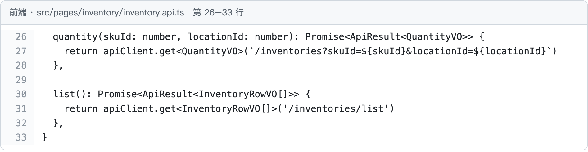
inventory.api.ts。quantity 查一个格子（走缓存），list 查整张表（直接查库）。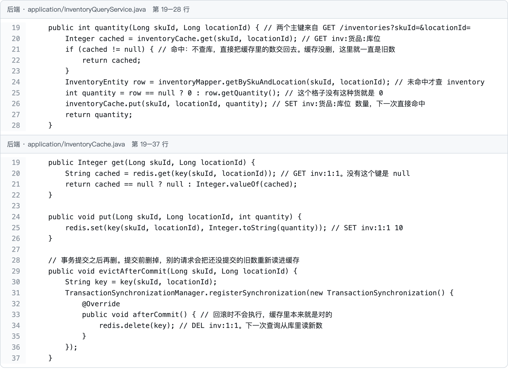
InventoryQueryService 第 20 行先 GET inv:3:1；第 21–22 行有就直接返回，不查库；没有才在第 24 行查 inventory，第 26 行 SET 进 Redis，下次直接命中。键的名字是 inv:货品主键:库位主键。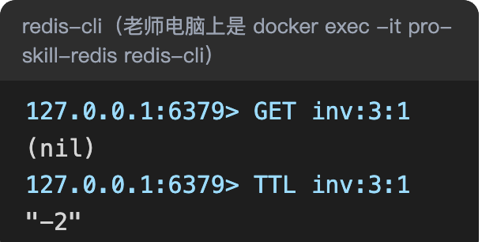
GET inv:3:1 是 3，TTL 是 -1（不会自己过期）。不删缓存会怎样
出库改了 inventory，Redis 里的数却没人动。下次查询命中缓存，拿到的还是出库前的数。演示：启动参数加 --app.lesson.cache-evict=off。
cache-evict=off：先查到 10，出库 4 个以后再查，还是 10；右边数据库里已经是 6。正确写法：提交之后删掉
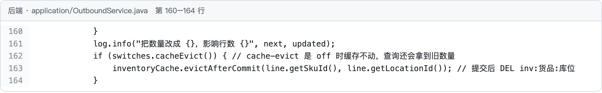
inv:货品:库位」。删的代码在上面 InventoryCache 第 29–37 行：afterCommit 里才 DEL，回滚时不删。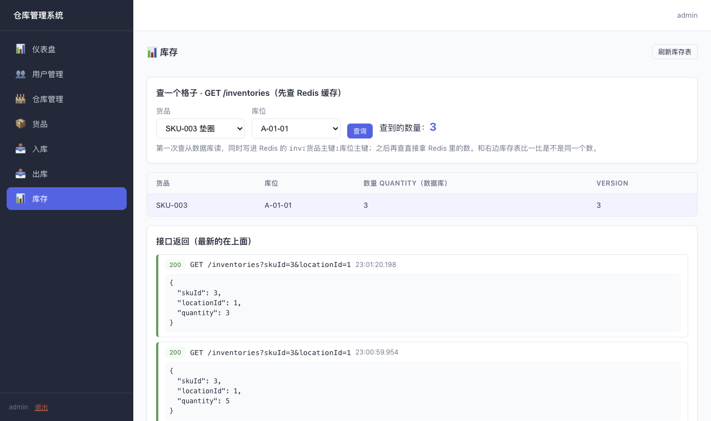
cache-evict=on：查到 5，出库 2 个以后再查是 3，和数据库一样。- 为什么删，不直接改成新数？两个请求同时改时，后写进 Redis 的不一定是最新的数。删掉以后，下一次查询从库里读，一定是对的。
- 为什么提交之后才删？提交前就删，别的请求可能在这之间把还没提交的旧数又读进缓存。
3. 锁：两张单同时出同一个格子
案例：A-01-01 上有 6 个，两张单各出 1 个，同时完成。库存够，两张都应该成功。
第二部分的乐观锁在这里会帮倒忙：两个请求都读到 version 1，先写的成功、version 变成 2，后写的条件 version = 1 对不上，返回 STOCK_CONFLICT。库存明明够，单却失败了。
演示：启动参数加 --app.lesson.stock-lock=after-check --app.lesson.outbound-read-pause-ms=3000，出库页勾选两张单「同时完成」。after-check 是读完数量、判断完才去拿锁，两个请求早就读到同一个数了，锁拦不住。
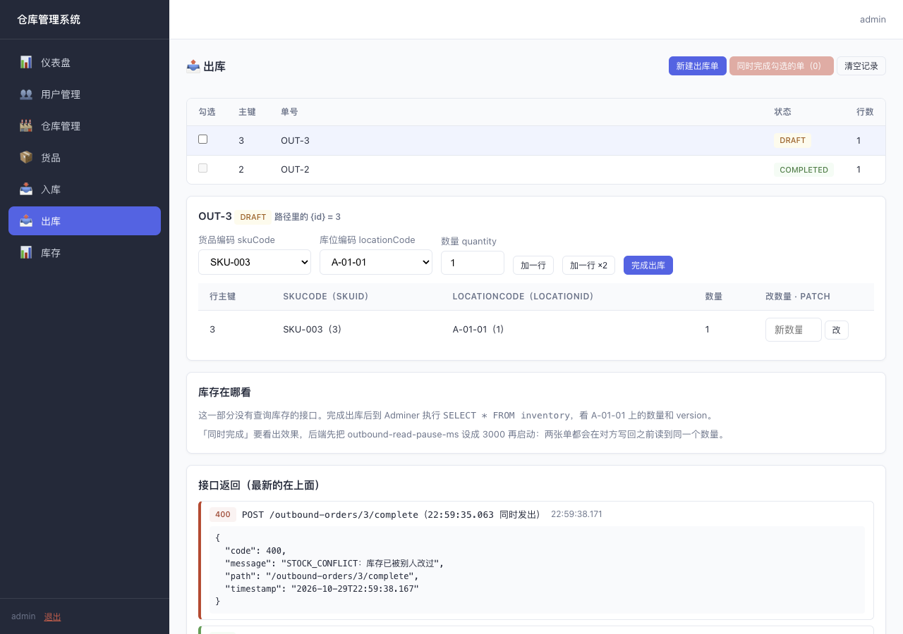
after-check：一张 200，另一张 400 STOCK_CONFLICT，可库存够。正确写法：先拿锁，再开事务读
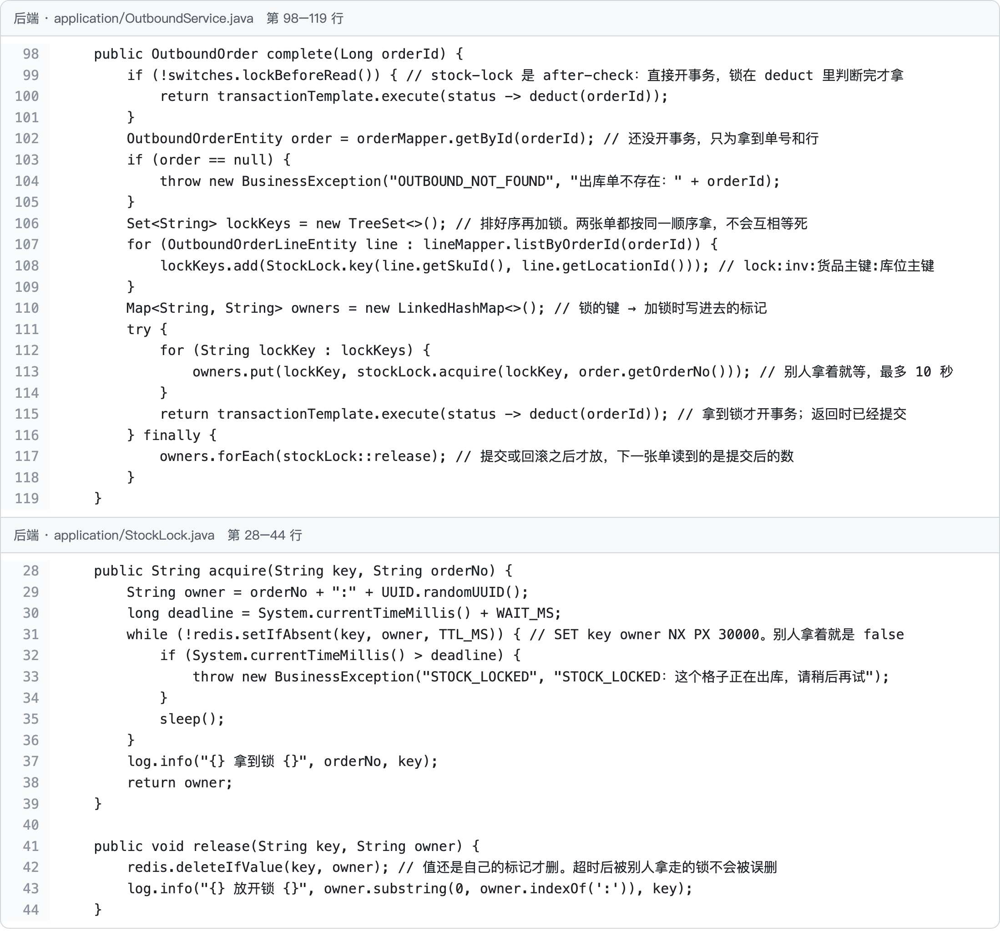
OutboundService.complete：第 106–109 行把这张单要动的格子排好序，键是 lock:inv:货品:库位；第 113 行逐个拿锁，别人拿着就等（最多 10 秒）；第 115 行拿到锁才开事务读数量、写回；第 117 行事务提交后才放锁。StockLock 第 31 行就是 SET 键 标记 NX PX 30000：键不存在才写得进，30 秒后自动过期，防止后端挂了锁永远不放；第 42 行放锁时值还是自己的标记才删，不会删掉别人的锁。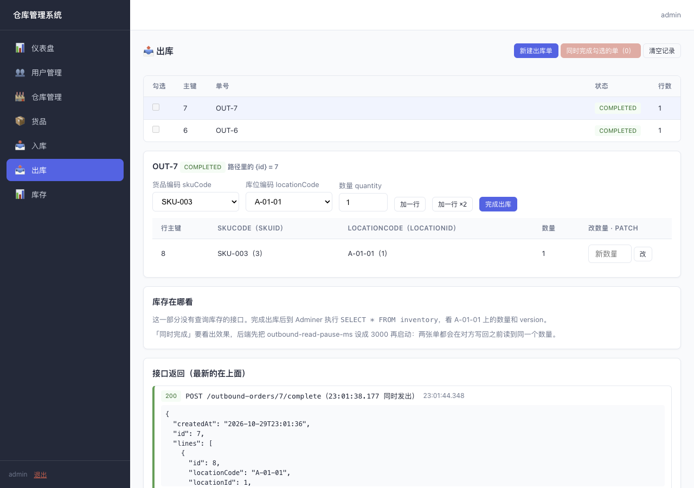
sku-location：两张都是 200。第二张晚 3 秒回来：它在等第一张放锁，拿到锁时读到的已经是第一张提交后的数。锁为什么要在事务外面拿：MySQL 默认的隔离级别下，事务里第一次读就定下了看到的数据。先开事务再等锁，等到了读到的还是旧数。
4. 防重复提交：同一个请求发了两遍
案例：网络慢，用户点了「加一行」没反应，又点了一次；或者浏览器自己重发。两个请求内容一模一样，应该只加一行。
做法是前端每次操作生成一个请求号，放在请求头 Idempotency-Key 里，重发时带同一个号。后端记下处理过的号。出库页的「加一行 ×2」就是用同一个号连发两次：
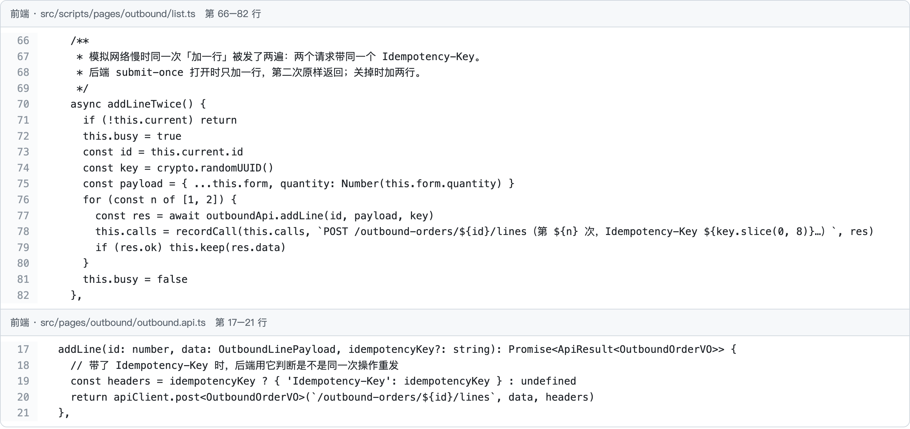
addLineTwice 生成一个号，连发两次 addLine；outbound.api.ts 把它放进请求头 Idempotency-Key。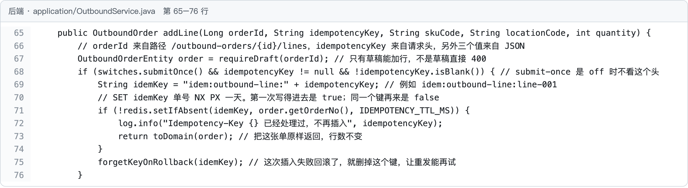
OutboundService.addLine：第 69 行键是 idem:outbound-line:请求号；第 71 行 SET 键 单号 NX PX 一天，第一次写得进去，第二次写不进去，第 73 行把单原样返回，不再插入；第 75 行插入失败回滚时删掉这个键，让重发还能再试。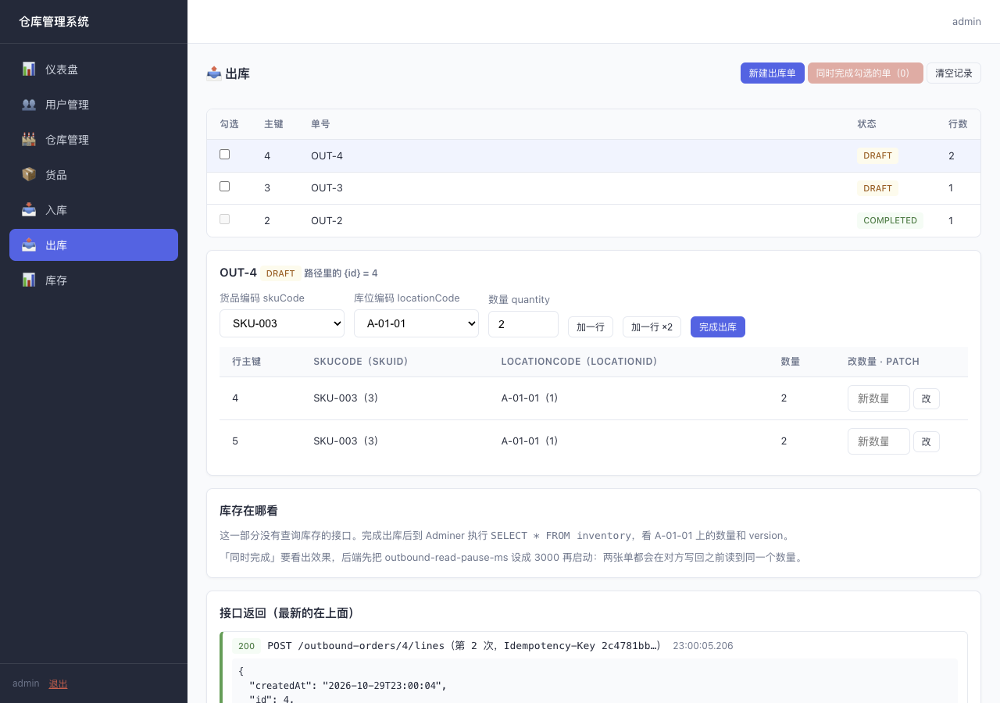
--app.lesson.submit-once=off：两次都 200，OUT-4 上多了两行一样的。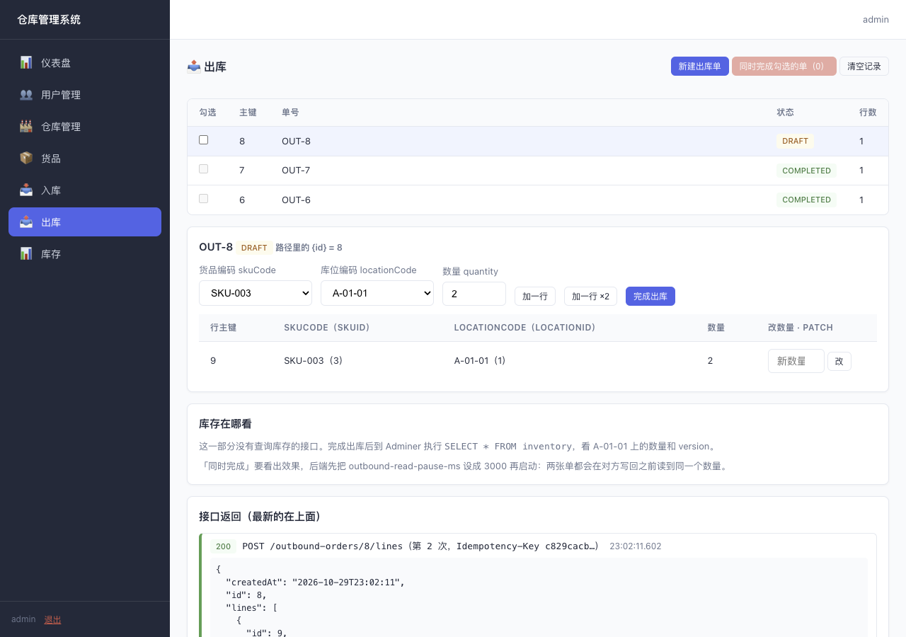
submit-once=on：两次都 200，OUT-8 上只有一行。第二次返回的就是第一次加完的那张单。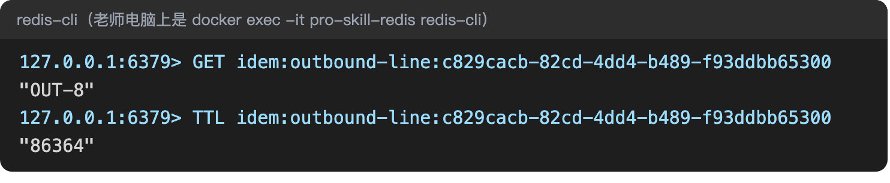
5. 异步消息：入库完成发一条消息
案例：入库完成后要写一条「入库通知」（实际系统里可能是通知采购、财务）。这件事不该让入库请求等着做完，入库只管发一条消息就返回，另一段代码（消费者）在后台慢慢处理。
Redis 的 Stream 就是一个排队的消息列表：
XADD 列表名 * 字段 值 ...：往队尾放一条消息，Redis 给它一个编号，例如1793285916224-0。XREADGROUP：消费者按「组」读消息。读走的消息进「待确认列表」。XACK：处理完了确认，从待确认列表里拿掉。没确认的，下次还会再读到。
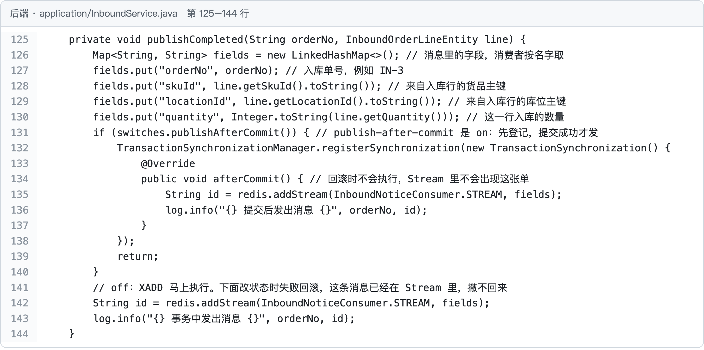
InboundService.publishCompleted：第 126–130 行把单号、货品、库位、数量放进消息；默认走第 131–139 行：提交成功后（afterCommit）才 XADD 到 wms:inbound:completed。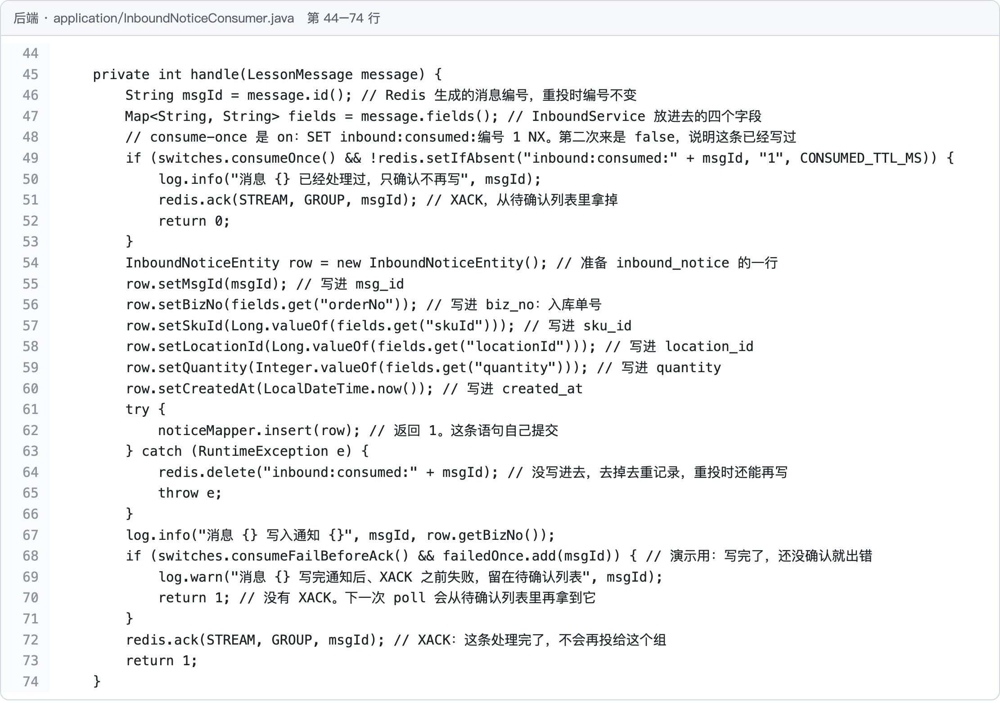
InboundNoticeConsumer.handle：每秒读一次 Stream，第 54–62 行把消息里的字段写成 inbound_notice 的一行，第 72 行 XACK。第 49 行和第 68 行是第 7 节要讲的两处。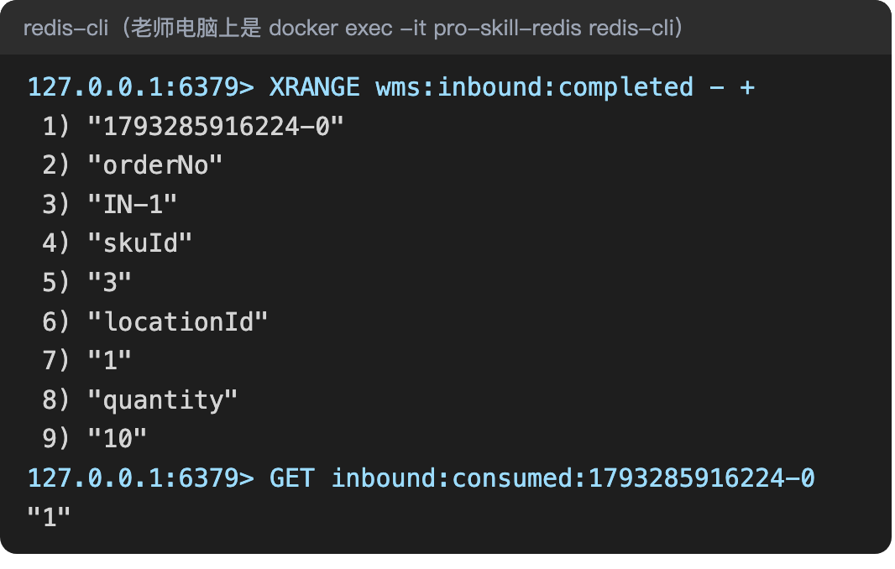
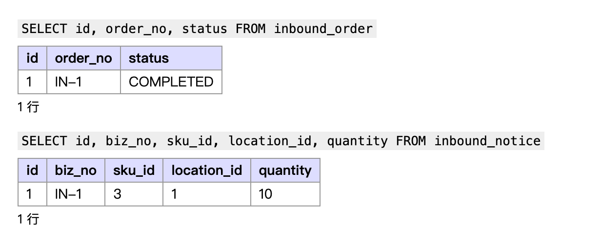
inbound_notice 多了一行 IN-1，是消费者在后台写的。6. 消息不能乱发：入库回滚了，通知照样发出
案例：入库在改状态之前失败了，整个事务回滚：库存没加，单还是草稿。这时不应该有入库通知。
演示：启动参数加 --app.lesson.publish-after-commit=off --app.lesson.inbound-fail-before-status=true。off 时在事务中间就 XADD 了（上一节图里第 141–142 行），事务回滚撤不回 Redis 里的消息。
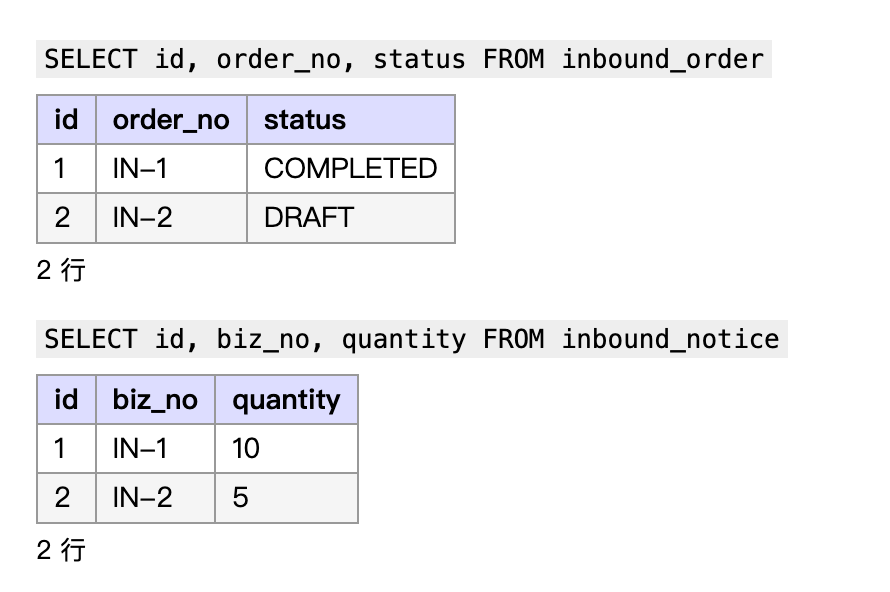
publish-after-commit=off：IN-2 失败还是草稿，通知表里却多了一行 IN-2。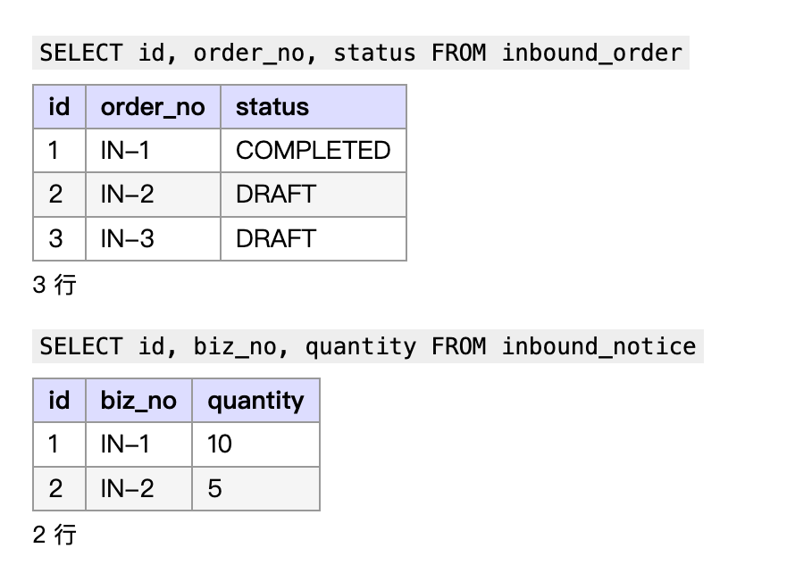
on（只加 inbound-fail-before-status=true）：IN-3 同样失败，通知表里没有 IN-3。回滚时 afterCommit 不执行，消息根本没发出去。7. 消息不能重复处理：重投了，通知写了两次
案例：消费者写完通知，还没来得及 XACK 就出错了（比如后端重启）。这条消息还在待确认列表里，下次会再投一次。要保证同一条消息只写一行通知。
演示：启动参数加 --app.lesson.consume-once=off --app.lesson.consume-fail-before-ack=true，然后完成一张入库单。
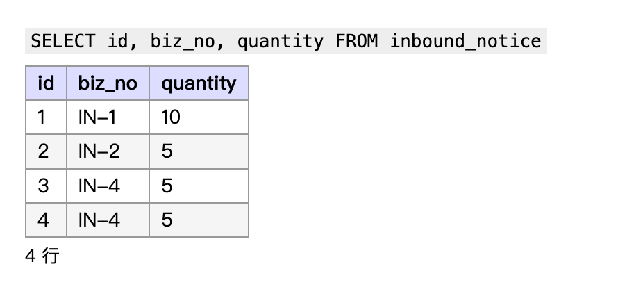
consume-once=off：IN-4 的通知写了两行。正确写法在第 5 节消费者那张图的第 49 行：处理前先 SET inbound:consumed:消息编号 1 NX。第一次写得进去，正常处理；重投时写不进去，说明处理过了，只 XACK 不再写（第 50–52 行）。写通知失败时第 64 行把这个标记删掉，重投还能再写。
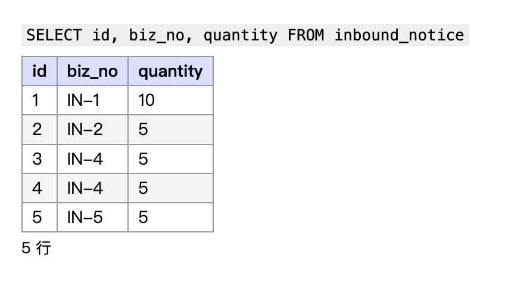
consume-once=on（只加 consume-fail-before-ack=true）：IN-5 同样重投了一次，通知只有一行。8. 剩下的自己看
| 内容 | 代码在哪 |
|---|---|
| Redis 命令怎么封装 | LessonRedis（接口）、RedisLessonRedis（连真的 Redis）、MemoryLessonRedis（测试用） |
| 消费者多久读一次 | InboundNoticePoller，间隔是 app.lesson.notice-poll-ms |
| 入库加库存时也删缓存 | InboundService.addInventory |
| 两条路径的测试 | RedisDefectPathTest、RedisFixedPathTest，开关写在测试类上 |
9. 作业里用 Redis 时
- 缓存：数据一改就删缓存，在事务提交之后删。
- 锁：
SET NX PX要带过期时间；放锁时确认是自己的；锁在事务外面拿。 - 防重：前端带请求号，后端
SET NX记下；处理失败要删掉标记。 - 消息：提交之后再发；消费者按消息编号去重，处理完才确认。